打開「今天」，一眼看完
按下上班打卡，今天的行程、快到期的任務、這個月收了多少錢，都在第一頁。
- 逾期和今天要交的任務會特別標出來
- 農曆日期跟著顯示
行事曆、任務與收款、番茄鐘和打卡，放在同一個小視窗裡。記下單價和數量，金額、結算日和收款日會自動算好。
Windows 10／11 · 免安裝，解壓縮就能用 · 免費
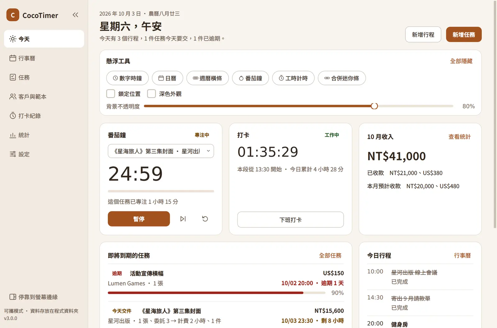
Gemini 把棒子交給小螃蟹，由牠帶你實際操作一輪：行事曆、新增任務、統計、側邊停靠和懸浮小工具。看到最後還有彩蛋。
照著一天的順序，看看每個功能會在什麼時候幫上忙。
按下上班打卡，今天的行程、快到期的任務、這個月收了多少錢，都在第一頁。
行程和任務的交件日排在同一個月曆上，點一天就能看當天的細節或新增行程。
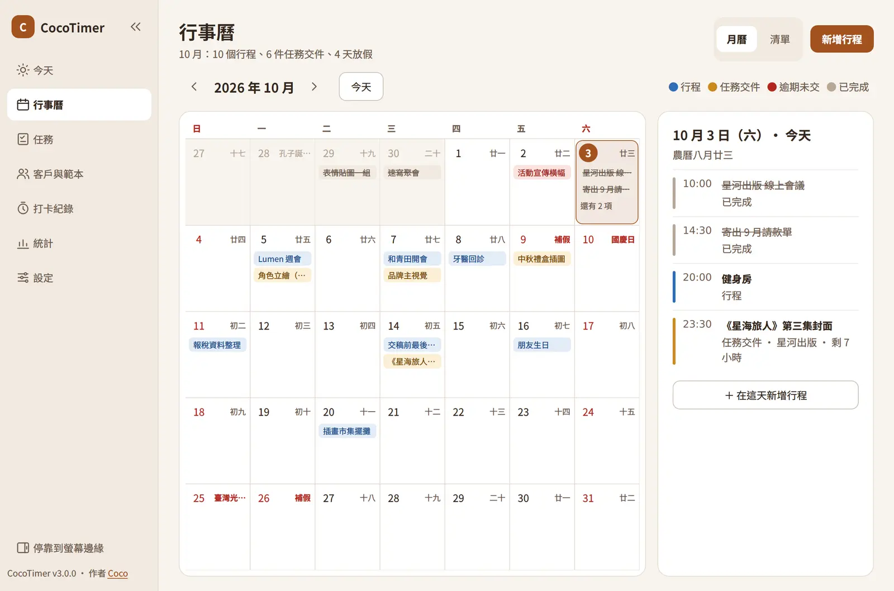
選好客戶，從範本帶入單價，填上數量就有總價。交件後，結算日和預計收款日也會照客戶的規則算出來。
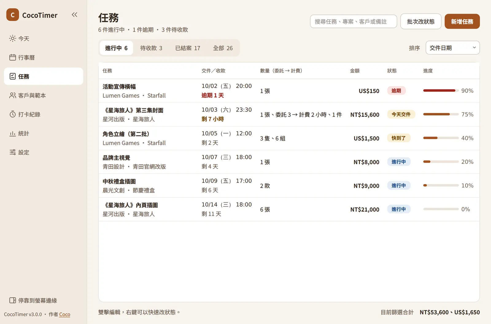
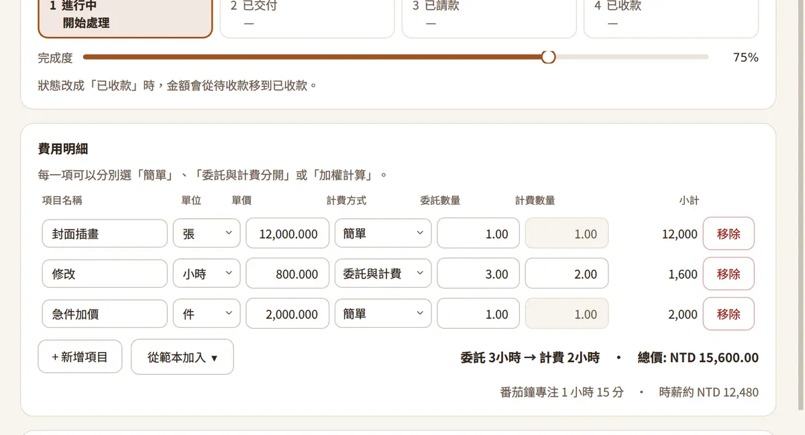
把常用的單價存成範本，設定「月底結算、次月 10 日付款」這類規則，遇到假日要不要順延也能選。
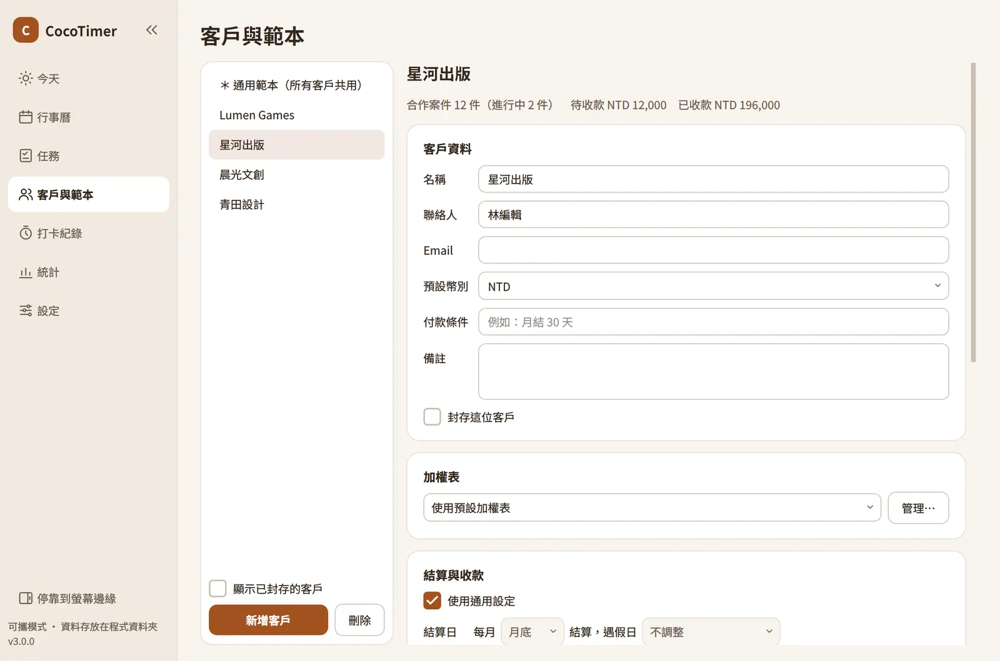
番茄鐘可以選定正在做的任務，專注時間會記在任務上，還會估算這件案子的時薪。
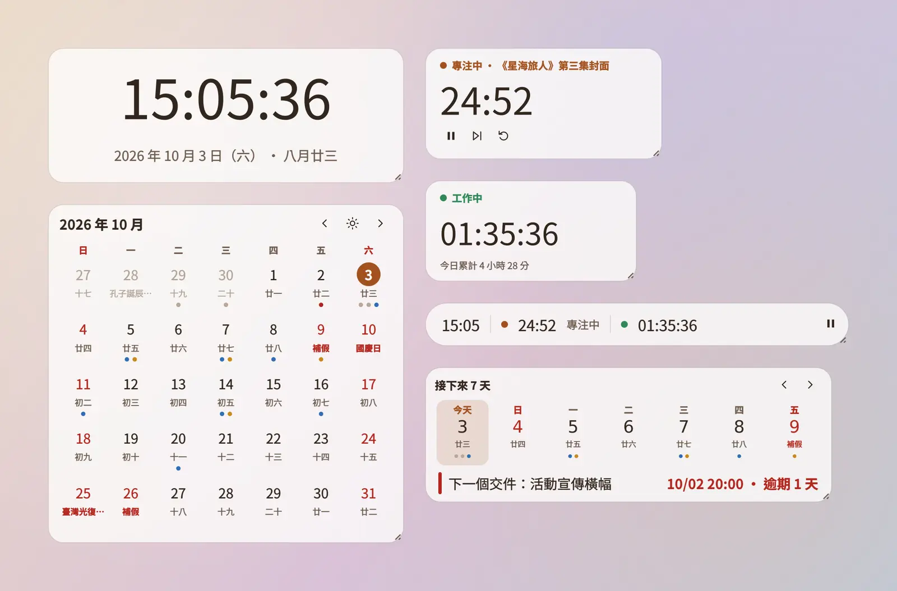
開啟側邊停靠後，CocoTimer 收成螢幕邊緣的小把手，點一下就滑出來，點回其他程式就自動收起，不會擋住手邊的工作。
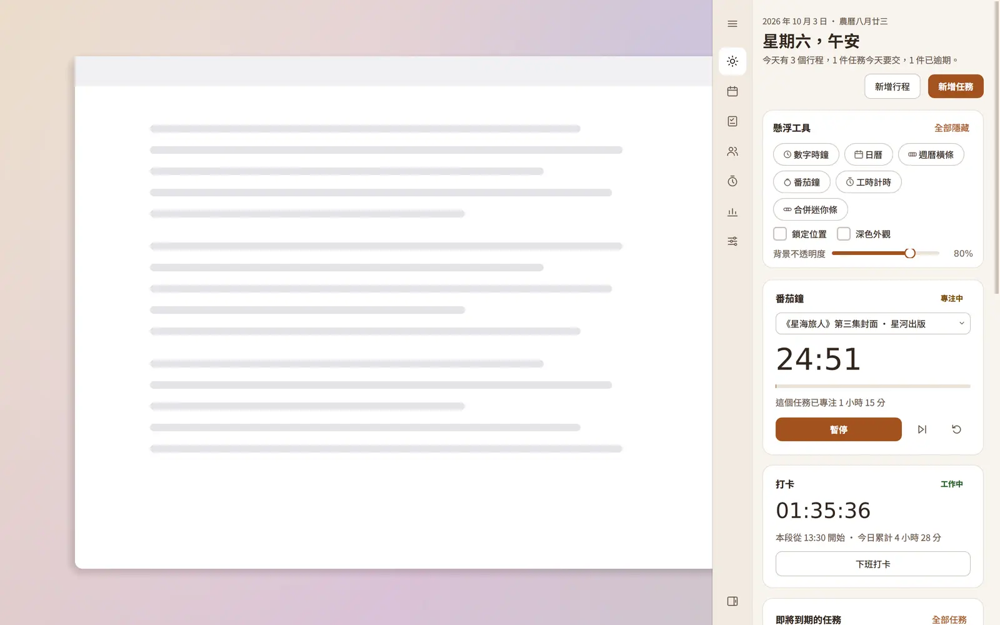
內建奶茶、經典和可可深色三種配色，也可以自己調每一個顏色和字體。
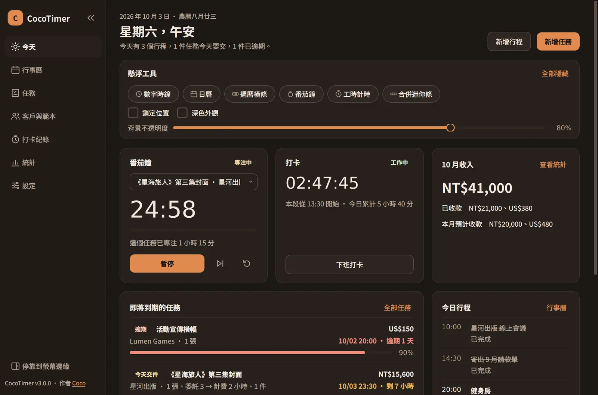
按月、按年或一次看全部的收款、待收款、交付件數和工時，每位客戶各佔多少也看得到。
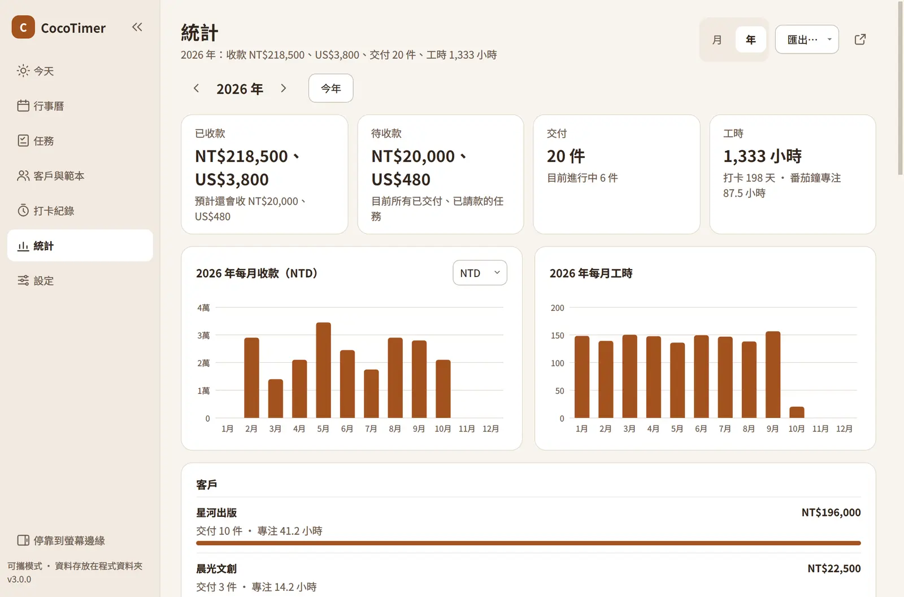
不用安裝，也不用註冊帳號。
到下載頁下載最新版的 zip 檔。
把 zip 解壓縮到你喜歡的位置，例如桌面或 D:\CocoTimer，然後打開 CocoTimer.exe。
第一次開啟時會問你常用的幣別、結算方式和配色，之後隨時都能在「設定」裡改。
所有資料都存在程式旁邊的 timemanager_data 資料夾，每天自動備份一次。換電腦時，把整個 CocoTimer 資料夾帶走就好。
把舊版旁邊的 timemanager_data 資料夾複製到新版的 CocoTimer 資料夾裡，打開新版就會自動轉換，舊的任務、行程和打卡紀錄都會保留。
三個步驟就設定好：認識一下功能、選常用幣別和結算方式，再挑一個喜歡的配色。不想設定也可以直接略過。
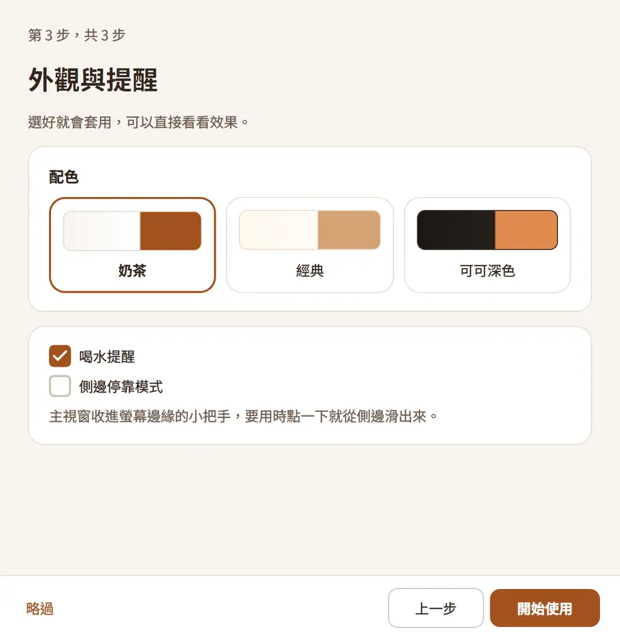
CocoTimer 是 Coco 的作品，兩個版本各有一位 AI 夥伴幫忙。
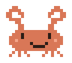
Gemini 是 Google 的商標，Claude 是 Anthropic 的商標。這裡的角色是同人風格的小插圖，不是官方圖示。